Тюлень
| 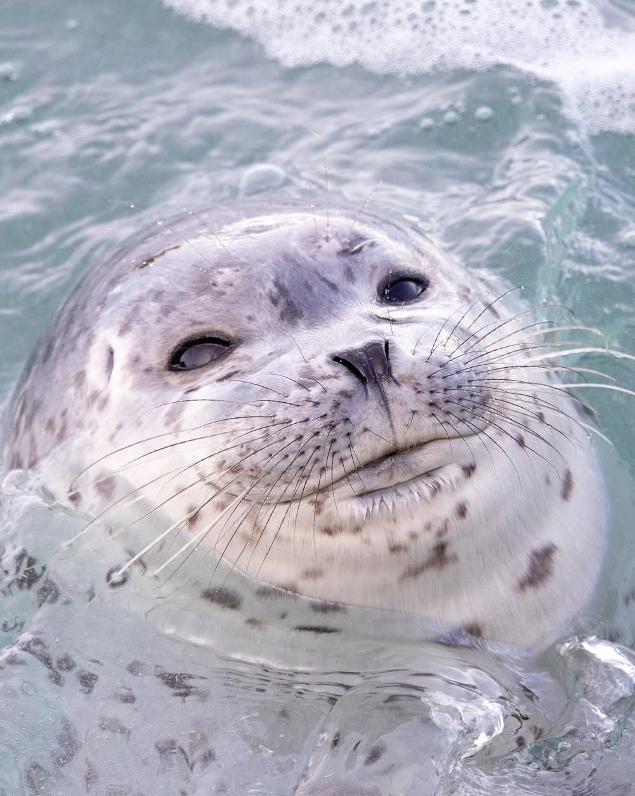 | 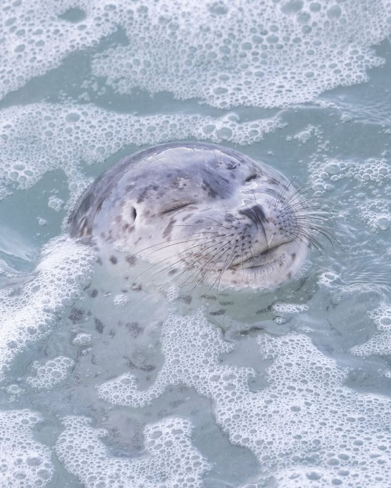 | 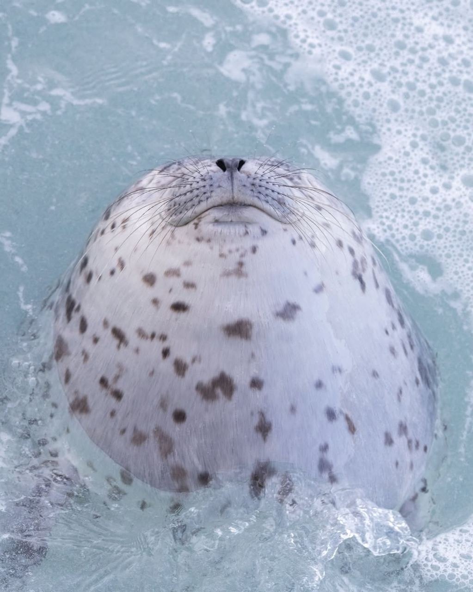 |
|---|---|---|
| 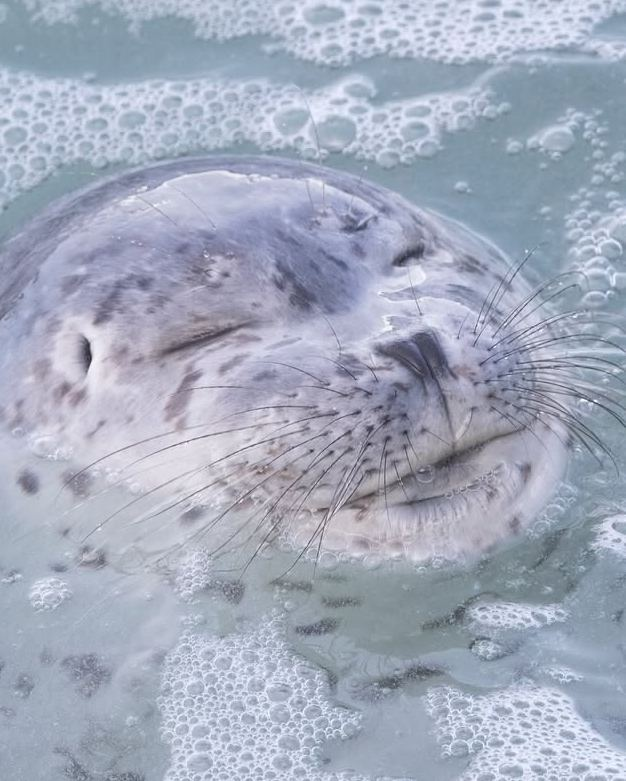 | 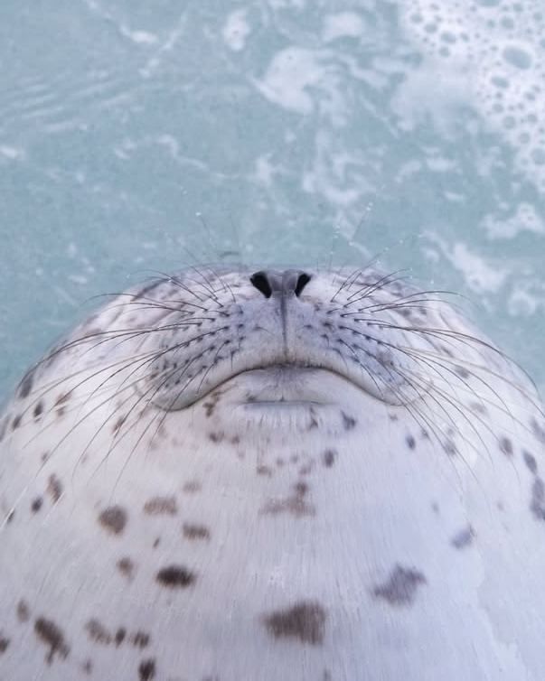 |
Это буквально я, когда наконец-то нашёл идеальную температуру воды в душе. (Тёпленькую)
| 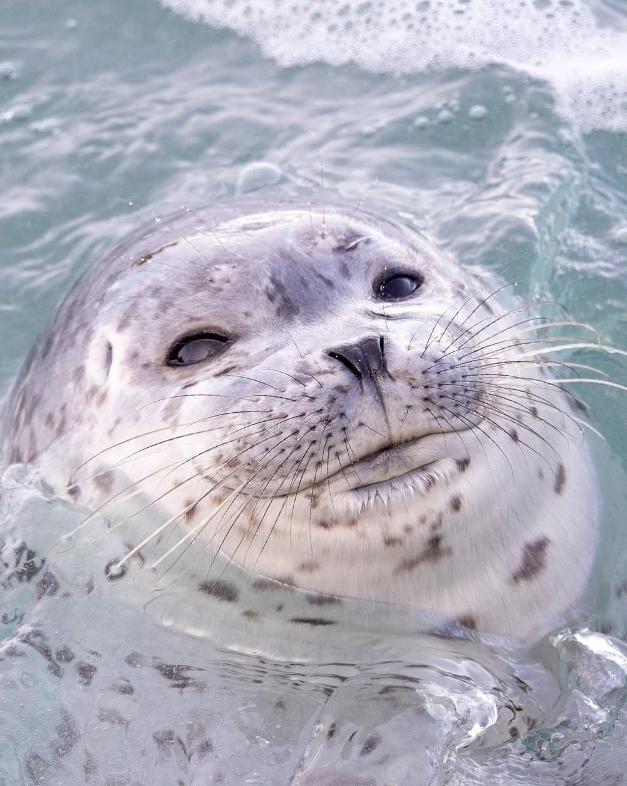 | 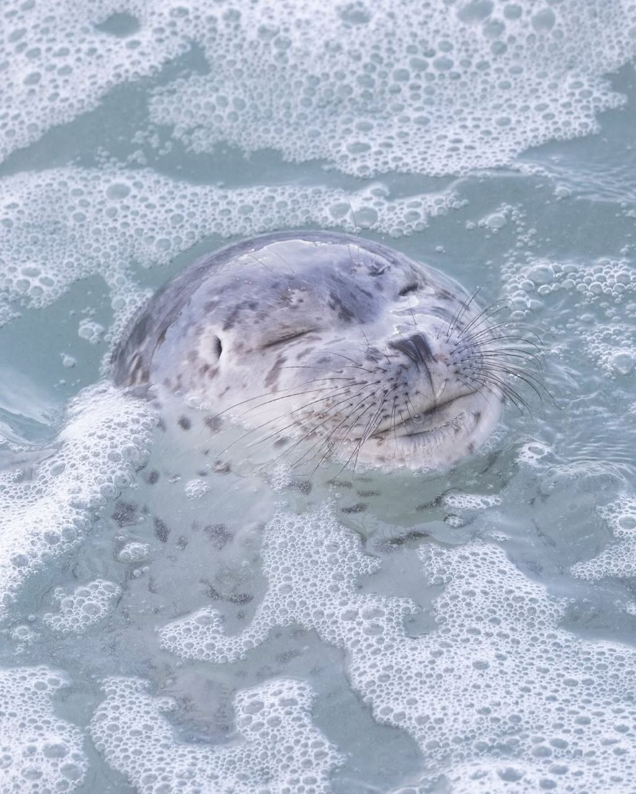 | 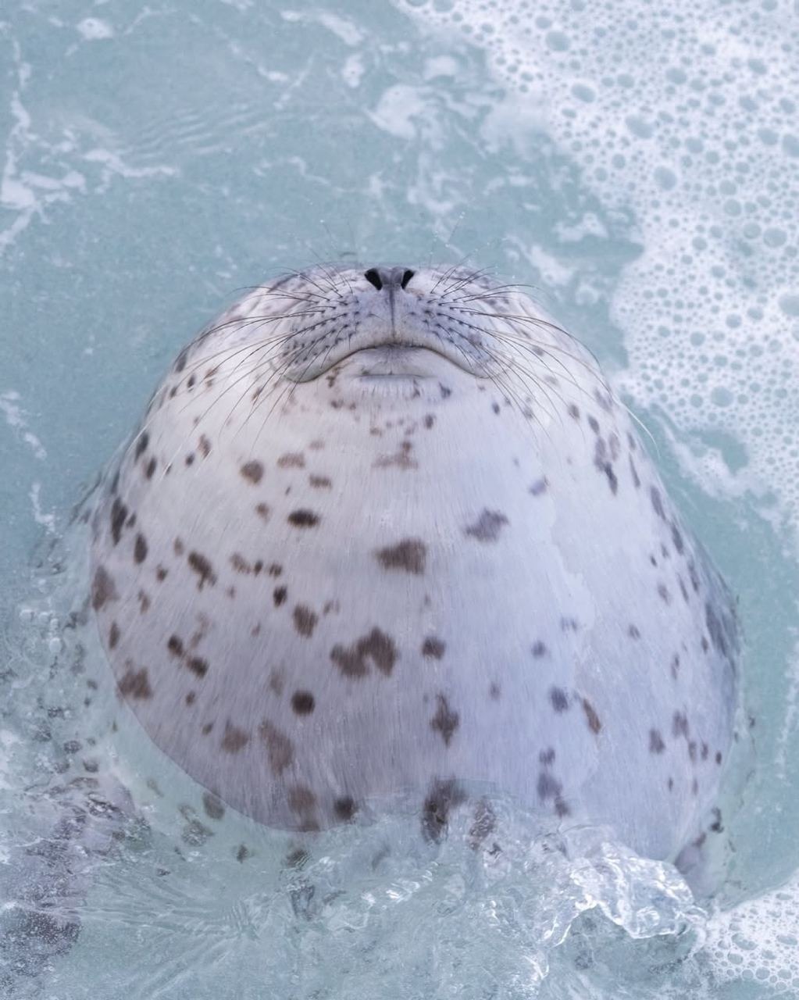 |
|---|---|---|
| 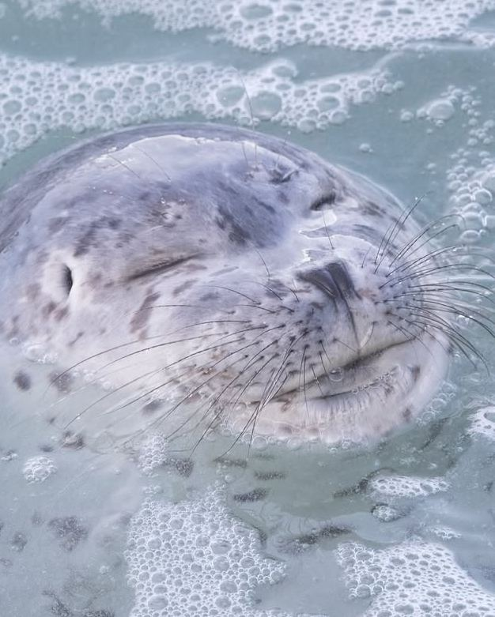 | 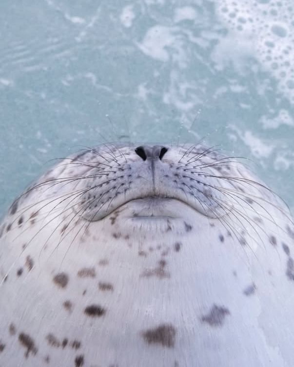 |
Это буквально я, когда наконец-то нашёл идеальную температуру воды в душе. (Тёпленькую)
| 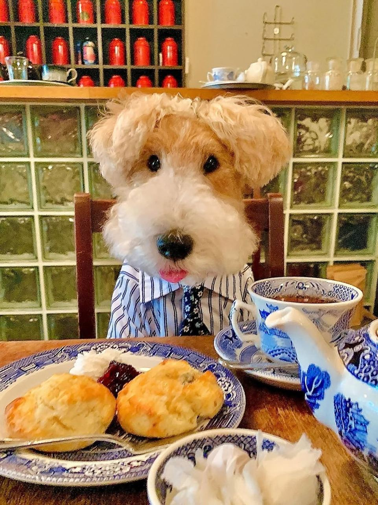 | 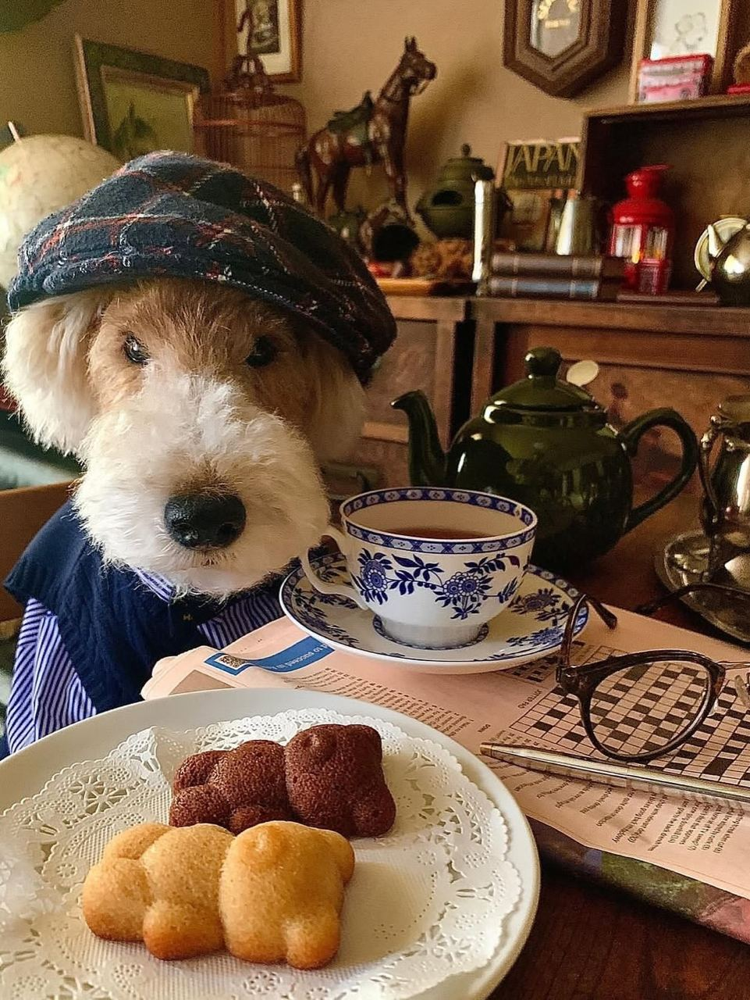 |
|---|
Фотографии самого обаятельного джентльмена здесь для того, чтобы вы забыли о всех своих тревогах и проблемах. А еще, прошу, обратите внимание на его идеальные костюмчики! Он такой утонченный